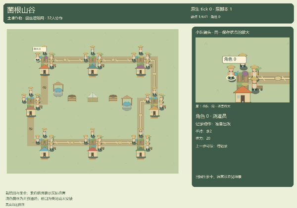
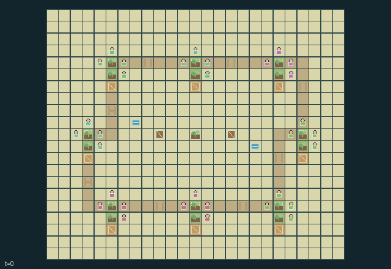

GI221 · Mycelium Valley

Original recording scope: 角色0完整实际记录，含原等待 · Mode: 实际诊断回放
Additional generated state replay (different trajectory / full-state debug)

Sustain eight interlinked farms with shared water, seed traits and compost labor; grow and deliver fruit while choosing which fungal resource links to connect, prune or treat as disease routes across a persistent finite valley.
Identity and original contract
32 independently actionable roles; 26 discrete commands per role; 1529 native observation columns per role; original horizon 640 steps. Declared per-step reward range: -2 to 26. Observation regime: fully_observable.
Source SHA-256: 19b2e4922d1730850ea0258b8fa2499e8044141fa86d86e5431f6866615a0d8d
The objective, rewards, population, map and horizon remain original. A preview is not a success claim.
Objective and gameplay
Sustain eight interlinked farms with shared water, seed traits and compost labor; grow and deliver fruit while choosing which fungal resource links to connect, prune or treat as disease routes across a persistent finite valley.
Neighbor soil imbalances launch visible packets carrying actual withdrawn water and nutrients along root corridors. Wet infected farms can infect those packets and later nonresistant crops at another farm. Pruning cancels the in-flight resource packet and future exchange; grafting, watering, compost transport, shared finite facilities and tool/resource handoffs alter peers' future feasible work.
- Eight farms each begin with watering, pruning, grafting and compost-cart tools. Tools and compatible bag resources can move between adjacent gardeners.
- Each farm's two plots share finite soil water and nutrients. Healthy crops advance on staggered eight-tick phases, consuming one of each per growth increment.
- Productive crops yield two fruit but can develop wet-soil disease; resistant crops yield one and block incoming fungal exposure. Grafting changes a real planted trait.
- An open root bed can move one water and one nutrient from the richer neighboring soil to the poorer. Packets traverse the visible x-then-y corridor one cell per tick.
- Wet infected source farms can put disease in a packet. Arrival can infect nonresistant crops at the next farm. Pruning a root destroys its packet and isolates that connection.
- Water comes from two finite shared wells; rain restores it. Organic waste and periodic leaf litter must be collected, carried to bins, composted and spread back onto soil.
- Compost bins have finite input, output and processing stages. Stirring helps processing, but finished compost still needs transport to a farm.
- Fruit delivery consumes fruit and rewards distinct actor, home-farm and foreign-pantry contributions. Costs and crop loss remain visible native components.
- The 25 by 21 valley persists inside H=640. Empty beds, resource shortages, isolated roots and disease remain playable states; the cap is truncation, not success.
Ending: No natural success or joint-failure terminal. This is a continuing finite world. H=640 truncates the observation window, not a success event; done inputs are absorbing.
What this game explores
Resource commons & externalities: An action changes a persistent resource or burden that another role also encounters. Compare extraction with maintenance and record the downstream resource trajectory.
Complementary production & service: A useful outcome requires ordered stages, scarce equipment or another role's capability. Measure real completed products and resource circulation rather than counting intermediate actions as success.
These are questions supported by rule structure, not observed learning effects.
Play it: operating walkthrough
crucibles play --game gi221Keep Python running and open its printed address. Select this game, set a seed and press Create session. The game itself is always English.
Assign a role range to Host with Assign / take over, or Assign all roles. Invite a second participant with Create player invitation, then assign a disjoint subset. Every original role is available.
For every owned role choose a legal command and press Queue. Arrow keys / WASD queue a declared directional action for the current role camera when available. Space or Advance one joint step advances everyone together. Non-directional games use the selectors.
Unqueued roles use the labelled untrained uniform-legal policy. Take over or release roles before the next step without resetting. Full-state debug is privileged and permanently logged; role cameras preserve permissions. Close the session to retain logs. Server restart does not restore sessions.
Complete command reference
IDs and English labels exactly match the manifest. Availability depends on role, resources, location and phase. An available action can still have no productive effect.
0·Wait; recover two energy
1·Move north
2·Move east
3·Move south
4·Move west
5·Fill one carried water from adjacent shared well
6·Irrigate an adjacent plot's farm with one carried water, watering tool
7·Harvest a healthy ripe plot into fruit and waste
8·Plant an empty adjacent plot with a carried seed, grafting tool
9·Graft a planted adjacent plot to carried seed trait, grafting tool
10·Prune disease from an adjacent plot, pruning tool
11·Cut adjacent root-bed connection and discard its in-flight packet, pruning tool
12·Connect adjacent root bed for one seed and one compost, grafting tool
13·Take one compost from an adjacent shared bin
14·Put one carried waste into an adjacent shared bin
15·Stir adjacent compost bin, compost-cart tool
16·Spread one carried compost on an adjacent plot's soil, compost-cart tool
17·Collect one ground detritus from an adjacent plot
18·Deliver one fruit to an adjacent farm pantry
19·Take a hardy seed from the central nursery
20·Take a productive seed from the central nursery
21·Take a resistant seed from the central nursery
22·Give first compatible resource to lowest-ID eligible adjacent actor
23·Exchange tools with lowest-ID adjacent actor when both loads fit eight
24·Rest; recover six energy
25·Save a matching seed from an adjacent developed crop, grafting tool
Roles and capability identifiers
These original role names describe capabilities, not interchangeable skins. Check each owned role's legal selector before planning handoffs.
actor_00·Hillcap irrigator
actor_01·Hillcap pruner
actor_02·Hillcap grafter
actor_03·Hillcap compost carter
actor_04·Dewplot irrigator
actor_05·Dewplot pruner
actor_06·Dewplot grafter
actor_07·Dewplot compost carter
actor_08·Sunapple irrigator
actor_09·Sunapple pruner
actor_10·Sunapple grafter
actor_11·Sunapple compost carter
actor_12·Eastbank irrigator
actor_13·Eastbank pruner
actor_14·Eastbank grafter
actor_15·Eastbank compost carter
actor_16·Russet irrigator
actor_17·Russet pruner
actor_18·Russet grafter
actor_19·Russet compost carter
actor_20·Lowmeadow irrigator
actor_21·Lowmeadow pruner
actor_22·Lowmeadow grafter
actor_23·Lowmeadow compost carter
actor_24·Westroot irrigator
actor_25·Westroot pruner
actor_26·Westroot grafter
actor_27·Westroot compost carter
actor_28·Mossbend irrigator
actor_29·Mossbend pruner
actor_30·Mossbend grafter
actor_31·Mossbend compost carter
Information and observation permissions
Fully public native physical world. Every role receives its own ID followed by the same public_keys vector: positions, tools, carried resources, seed/crop traits, soil, links, in-flight packets including infection, shared facilities, weather/calendar and real event/reward components. All entity visibility masks are true; inactive packets are not rendered as present. There is no hidden order, private farm stock or renderer-only information. Group labels and role selection use the same actor/farm state.
The GIF is full-state debug and may reveal hidden entities or private state. Train on obs[agent], not the picture, state tree or another role's private row. Field slices and visibility are in the original manifest.
Reinforcement-learning integration
import jax
from crucibles_jaxmarl import make
env = make("gi221")
key = jax.random.PRNGKey(0)
key, rk, ak, sk = jax.random.split(key, 4)
obs, state = jax.jit(env.reset)(rk)
actions = env.sample_actions(ak, state)
obs, state, rewards, dones, info = jax.jit(env.step_env)(sk, state, actions)
done = dones["__all__"]Observations are float32 vectors of width 1529; actions are scalar int32; masks have 26 entries. Supply all 32 roles each transition. Masked sampling is an engineering reference, not a trained learner.
step_env retains terminal data without reset. step performs outer autoreset and keeps terminal data in info["raw_state"] and info["raw_observation"]. Use dones["__all__"] for episode boundaries; separate completion, failure and time limit in analysis.
JIT or vmap equal identities and shapes. Split independent reset, policy and transition keys. Group different shapes explicitly; do not shrink the population or horizon. Host rendering stays outside training.
Training questions and fair evaluation
Define valid completion from the objective before fitting. Preserve original rewards and also report real deliveries/services, losses, resource state, unresolved episodes and per-role returns. Animation is not a reward signal.
An action changes a persistent resource or burden that another role also encounters. Compare extraction with maintenance and record the downstream resource trajectory.
A useful outcome requires ordered stages, scarce equipment or another role's capability. Measure real completed products and resource circulation rather than counting intermediate actions as success.
Compare memory, communication or centralized critics under matched actor information. Declare critic access; keep actor inputs role-filtered. Match partner/opponent distributions, masks, compute and checkpoint selection. Final tests never enter fitting or selection.
Independent training runs or source-pairing blocks are inferential units; episodes from one policy are not independent training replications. Save hashes, keys, versions, device, time and cost. Negative, zero, failed and indeterminate outcomes are valid. No trained checkpoint or target score is supplied.
Classification and evidence
Overlapping editorial labels are reading aids, not proof of novelty, difficulty, strategic equivalence or learning effects.
- Resource commons & externalities
- Evidence
manifest.task.objective: Sustain eight interlinked farms with shared water, seed traits and compost labor; grow and deliver fruit while choosing which fungal resource links to connect, prune or treat as disease routes across a persistent finite valley.
- Evidence
manifest.task.interaction: Neighbor soil imbalances launch visible packets carrying actual withdrawn water and nutrients along root corridors. Wet infected farms can infect those packets and later nonresistant crops at another farm. Pruning cancels the in-flight resource packet and future exchange; grafting, watering, compost transport, shared finite facilities and tool/resource handoffs alter peers' future feasible work.
- Evidence
manifest.task.observation_access: Fully public native physical world. Every role receives its own ID followed by the same public_keys vector: positions, tools, carried resources, seed/crop traits, soil, links, in-flight packets including infection, shared facilities, weather/calendar and real event/reward components. All entity visibility masks are true; inactive packets are not rendered as present. There is no hidden order, private farm stock or renderer-only information. Group labels and role selection use the same actor/farm state.
- Complementary production & service
- Evidence
manifest.task.observation_access: Fully public native physical world. Every role receives its own ID followed by the same public_keys vector: positions, tools, carried resources, seed/crop traits, soil, links, in-flight packets including infection, shared facilities, weather/calendar and real event/reward components. All entity visibility masks are true; inactive packets are not rendered as present. There is no hidden order, private farm stock or renderer-only information. Group labels and role selection use the same actor/farm state.
- Evidence
scene.rules.6: Compost bins have finite input, output and processing stages. Stirring helps processing, but finished compost still needs transport to a farm.
Source, receipts and preview limits
The additional generated state GIF replays saved untrained legal actions through the original kernel. At most 25 actual endpoints include initial and terminal state; no invented interpolation. It is full-state debug, not the role observation. Where an original scene preview exists, it is displayed first with its own recorded information scope. The two recordings may use different trajectories and views.
Original source, observation slices, manifest and mechanism
Native receipt · Presentation receipt
Engineering passes do not establish learning. Nonzero floating differences remain recorded and undetermined; no new tolerance was introduced. Human scores remain unverified.